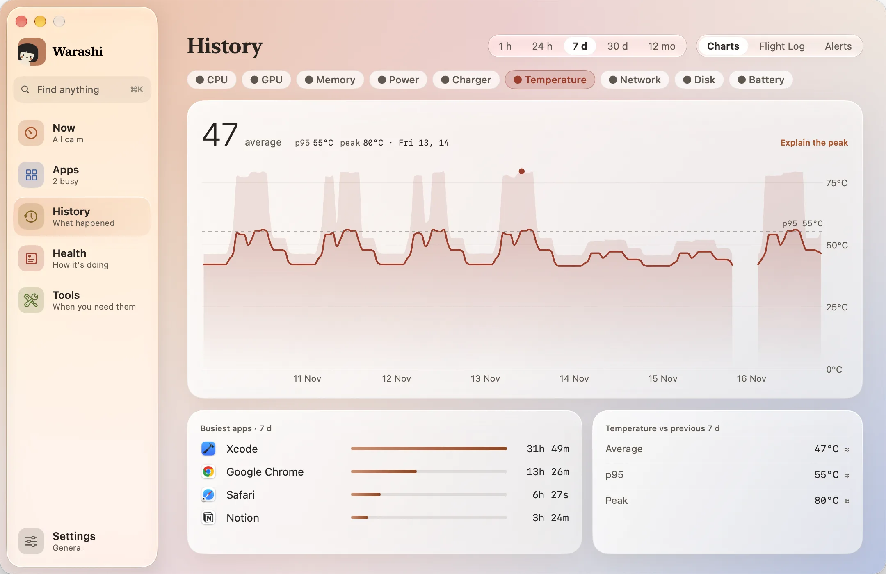
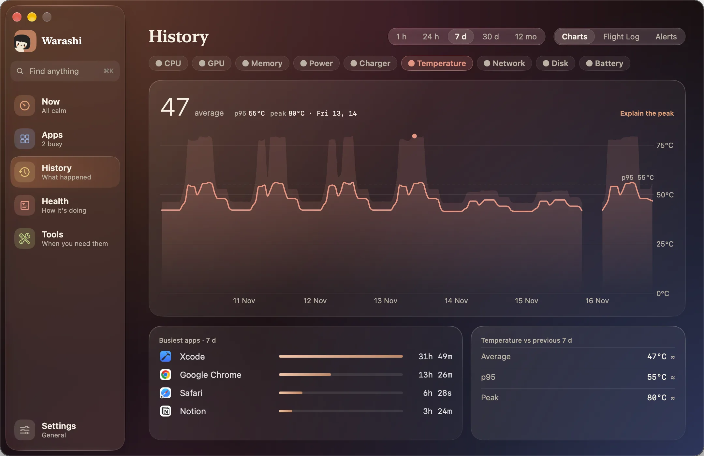

Jika kipas Mac Anda berputar kencang, bagian bawahnya hangat, dan kernel_task tiba-tiba memakai banyak CPU, berarti Mac Anda sedang melindungi dirinya dari panas.
Apa yang dikerjakan kernel_task
kernel_task adalah macOS sendiri. Saat chip terlalu panas, macOS membuat kernel_task tampak sibuk agar app lain mendapat waktu CPU lebih sedikit, dan chip pun mendingin. Ia bukan penyebabnya; ia adalah remnya. Menutupnya tidak mungkin, dan bukan yang Anda inginkan.
Throttling termal
Throttling berarti macOS menurunkan kecepatan chip agar tetap dalam suhu aman. Pada MacBook Air tanpa kipas hal ini terjadi lebih cepat saat pekerjaan berat yang lama seperti ekspor, build, atau game; Mac dengan kipas biasanya bisa mempertahankan kecepatan penuh lebih lama.
Apa yang bisa Anda lakukan
- Temukan app yang benar-benar bekerja keras (urutkan menurut CPU dan GPU), lalu jeda atau keluarkan.
- Jaga ventilasi tetap bebas; hindari permukaan lunak di bawah Mac.
- Untuk pekerjaan berat yang lama di MacBook Air, ruangan yang lebih sejuk atau dudukan akan membantu.
- Jika ini terjadi setiap hari, pertimbangkan apakah pekerjaan Anda membutuhkan Mac dengan kipas.
Ketahui seberapa sering terjadi
Warashi mencatat menit-menit Mac Anda melambat karena panas. Peringatan Mac terlalu panas memberi tahu saat itu mulai, dan Penasihat Upgrade menghitung menit yang di-throttle per minggu saat merekomendasikan chip.

